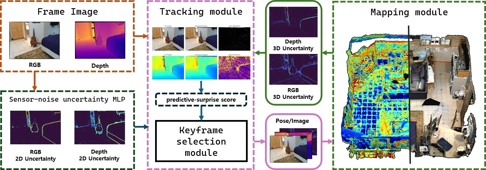
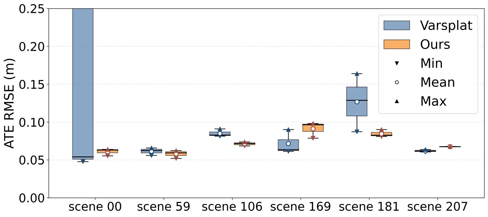
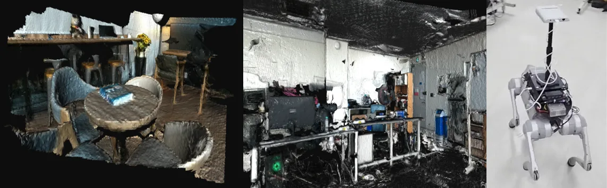

BayesianGS-SLAM：基于概率建模的不确定性感知神经渲染 SLAMBayesianGS-SLAM: Uncertainty-Aware Neural Rendering SLAM via Probabilistic Formulation
S 级；直接把不确定性量化接入几何优化、鲁棒跟踪与关键帧决策。
一句话工作总结
把传感器噪声与透明度诱导的地图表示不确定性传播到统一流水线；目标是在不牺牲跟踪与渲染的情况下减少不可靠残差和冗余建图调用。
完整单篇海报（待补全）
当前记录尚未达到完整海报质量门槛，暂不把摘要或评分理由冒充方法/实验结论。
待补字段：实验数字与比较（缺少可核验数字）。下一次任务需从论文全文或官方 HTML 提取证据后再发布。
摘要
论文提出在 3D Gaussian Splatting SLAM 中联合估计 RGB 与深度预测不确定性，并把它用于建图、跟踪和关键帧选择。
Neural-rendering-based SLAM relies on rendered RGB-D residuals for camera tracking and map optimization, but the reliability of these predictions can vary substantially because of sensor noise, limited observation coverage, and incomplete map representations. Without an explicit reliability estimate, unreliable residuals may adversely affect pose optimization, while frames already well explained by the current map may trigger redundant mapping updates. In this paper, we present BayesianGS-SLAM, an uncertainty-aware 3D Gaussian Splatting SLAM framework that estimates predictive color and depth uncertainty during mapping and consistently reuses it across the SLAM pipeline. Our tractable probabilistic formulation combines a sensor-noise uncertainty component with an opacity-induced map-representation component propagated through the rendering process. The resulting predictive uncertainty is used to augment mapping, normalize tracking residuals through a robust pose objective, and evaluate incoming frames using a predictive-surprise-based keyframe criterion. Unlike prior uncertainty-aware neural-rendering SLAM methods that primarily consider color uncertainty or use uncertainty only during mapping, our framework estimates predictive uncertainty for both color and depth and integrates it into mapping, tracking, and keyframe selection. Evaluations on real-world RGB-D datasets demonstrate substantially improved depth uncertainty-error ranking compared with existing uncertainty-aware SLAM methods. Moreover, the proposed keyframe-selection strategy reduces the number of selected keyframes and mapping calls while maintaining competitive tracking and rendering performance.
图表/页面预览
{kind=link}

{kind=link}

{kind=link}
